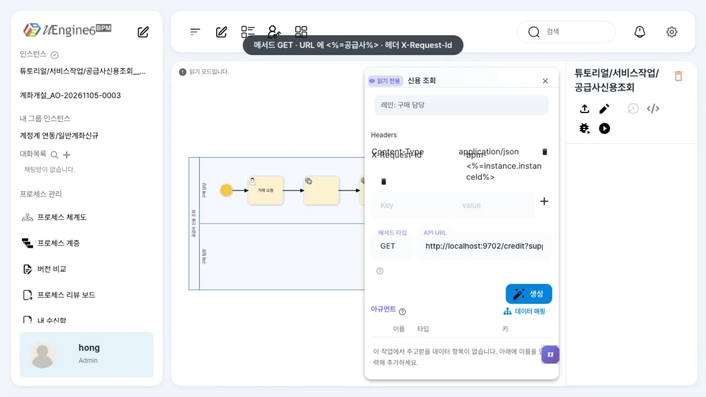
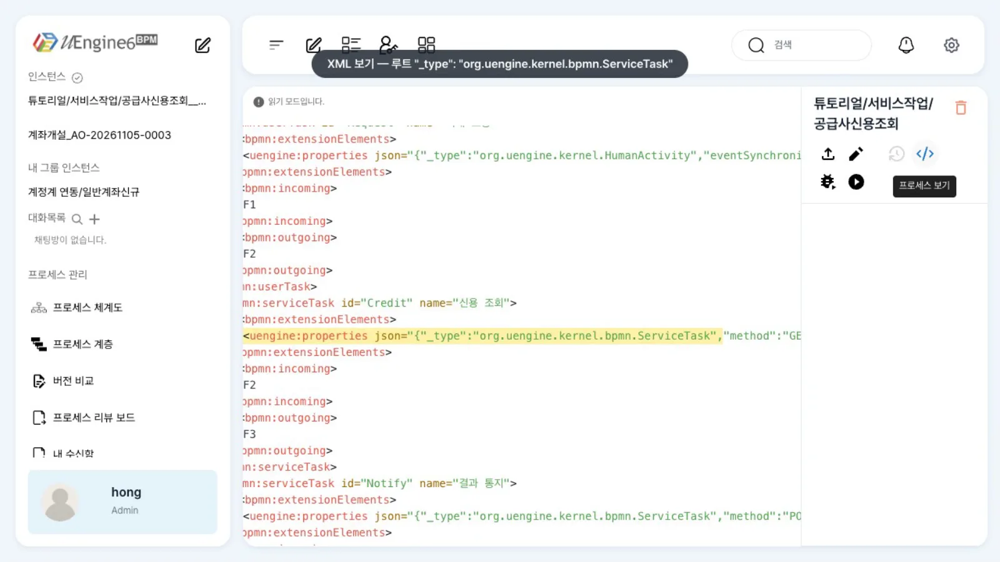
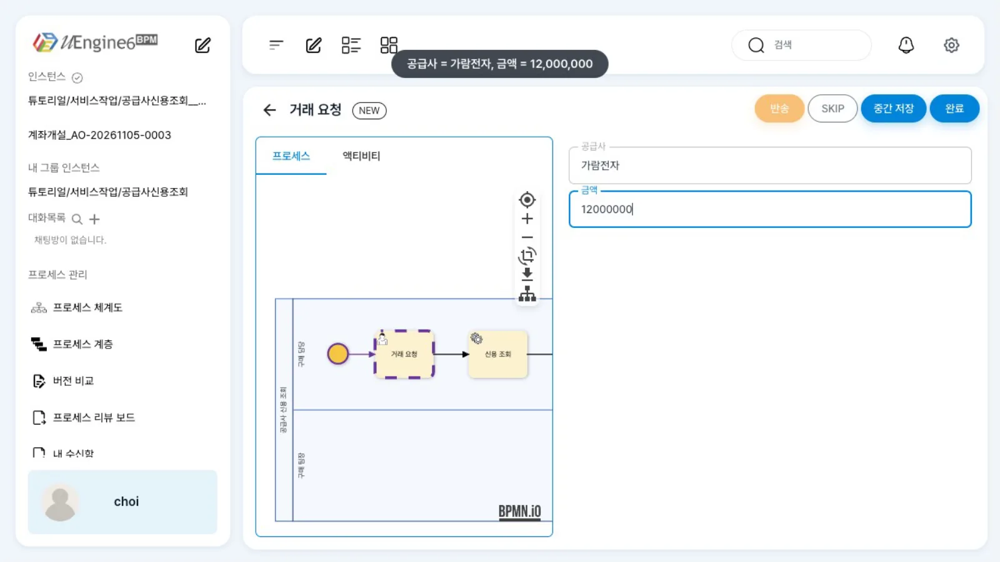
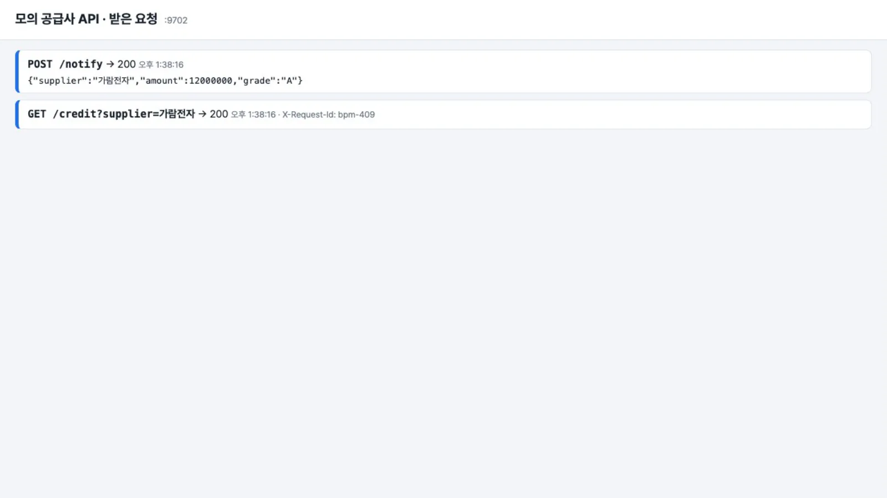
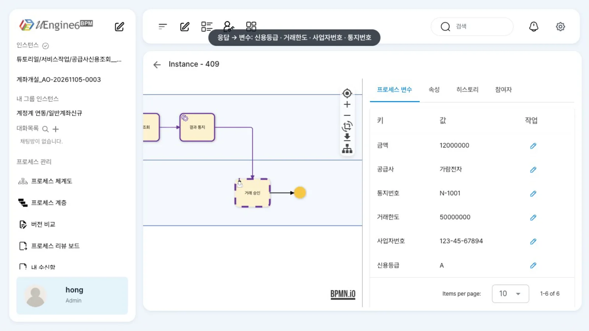

서비스 작업으로 외부 REST API를 부르고, 응답 JSON의 값을 프로세스 변수에 담습니다. 주소·헤더·본문에는
<%=변수%>로 값을 넣습니다. 직접 실행할 수 있는 모의 「공급사 신용 조회」 API로 따라 합니다.
무엇을 · 왜#
서비스 작업(Service Task)은 사람이 아니라 엔진이 하는 작업입니다. 신용 조회, 재고 확인, 결과 통지처럼 다른 시스템의 API를 한 번 부르고 결과를 받아 오는 일에 씁니다.
uEngine6의 서비스 작업(org.uengine.kernel.bpmn.ServiceTask)은 Spring RestTemplate으로 동기 호출합니다. 앞선 사람 작업의 「완료」 요청 안에서 바로 호출되며, 응답이 와야 다음 작업이 생깁니다.
| 하는 일 | 설정 |
|---|---|
| 어디로 | method(GET·POST·PUT·DELETE) + uriTemplate |
| 무엇을 보내나 | headers(이름·값 목록), inputPayloadTemplate(JSON 본문) |
| 값 넣기 | 주소·헤더·본문의 <%=변수%>를 그 인스턴스의 변수 값으로 바꿉니다 |
| 응답 받기 | outputMapping: 응답 JSON 경로 [arguments].a.b → 프로세스 변수 |
| 실패하면 | 앞 작업의 완료가 통째로 되돌려집니다. 오류 경계를 붙이면 다른 길로 갑니다(실패 경로와 되돌리기) |
비동기 호출이나 오래 걸리는 외부 처리라면 서비스 작업 대신 「요청 이벤트 → 결과 이벤트로 작업 끝내기」가 맞습니다(작업을 이벤트로 끝내기).
따라 하기#
예제는 튜토리얼/서비스작업/공급사신용조회입니다. 최구매가 「거래 요청」에 공급사와 금액을 넣으면, 「신용 조회」가 모의 API를 GET으로 부르고, 「결과 통지」가 POST로 결과를 알린 뒤, 윤팀장의 「거래 승인」으로 갑니다.
- 모의 API 띄우기. 아래 모의 API를 파일로 저장하고
node supplier-api.mjs로 띄웁니다(의존성 없음,:9702). 브라우저로http://localhost:9702/를 열면 받은 요청이 실시간으로 쌓입니다. - 정의 보기.
튜토리얼/서비스작업/공급사신용조회를 엽니다. 톱니바퀴 모양 두 개가 서비스 작업입니다. - 서비스 작업 패널. 「신용 조회」를 두 번 누릅니다. 「Headers」에
X-Request-Id: bpm-<%=instance.instanceId%>, 「메서드 타입」GET, 「API URL」http://localhost:9702/credit?supplier=<%=공급사%>가 있습니다. 응답을 변수로 옮기는 설정은 「데이터 매핑」입니다.
「신용 조회」 패널 — Headers, 메서드 타입 GET, API URL - XML로 확인. 오른쪽 위
</>(XML 보기)를 누르면 정의 XML이 나옵니다. 서비스 작업 JSON의 맨 앞에"_type":"org.uengine.kernel.bpmn.ServiceTask"가 있어야 합니다(아래 알려진 제약).
XML 보기 — 「신용 조회」의 루트 _type - 실행. 최구매의 업무 목록에서 「거래 요청」을 열어 「공급사」
가람전자, 「금액」12000000을 넣고 완료를 누릅니다.
「거래 요청」 — 공급사·금액 입력 - API가 받은 것. 모의 API 화면에 두 줄이 생깁니다.
GET /credit?supplier=가람전자(헤더X-Request-Id: bpm-<인스턴스 번호>)와POST /notify본문{"supplier":"가람전자","amount":12000000,"grade":"A"}입니다. 두 번째 호출의grade는 첫 번째 응답에서 받은 변수입니다.
모의 API 가 받은 요청 — GET /credit 과 POST /notify 본문 - 변수 확인. 관리자 화면에서 인스턴스를 열면
신용등급 A,거래한도 50000000,사업자번호 123-45-67894,통지번호 N-1001이 들어와 있고, 윤팀장에게 「거래 승인」이 가 있습니다.
관리자 화면 — 신용등급·거래한도·사업자번호·통지번호
설정 레퍼런스#
패널 칸 ↔ JSON#
| 패널(서비스 작업) | JSON | 비고 |
|---|---|---|
| Headers (Key · value) | headers[] = {"name","value","_type":"org.uengine.kernel.bpmn.HttpHeader"} |
값에 <%=변수%> 가능 |
| 메서드 타입 | method |
|
| API URL | uriTemplate |
<%=변수%>, <%=instance.instanceId%>, <%=instance.corrkey%> |
| JSON 본문 편집기 | inputPayloadTemplate |
POST·PUT 본문 |
| 데이터 매핑(응답 → 변수) | outputMapping.mappingContext.mappingElements[] |
argument.text = 변수, variable.name = [arguments].<응답 경로> |
| (패널에 없음) | noValidationForSSL, skipIfNotFound |
XML로만 |
배포한 정의(발췌)#
// 신용 조회
{"_type": "org.uengine.kernel.bpmn.ServiceTask",
"method": "GET",
"uriTemplate": "http://localhost:9702/credit?supplier=<%=공급사%>",
"inputPayloadTemplate": "",
"headers": [{"name": "Content-Type", "value": "application/json", "_type": "org.uengine.kernel.bpmn.HttpHeader"},
{"name": "X-Request-Id", "value": "bpm-<%=instance.instanceId%>", "_type": "org.uengine.kernel.bpmn.HttpHeader"}],
"noValidationForSSL": false, "skipIfNotFound": false,
"outputMapping": {"eventType": "", "attributes": [], "mappingContext": {"mappingElements": [
{"argument": {"text": "신용등급"}, "variable": {"name": "[arguments].grade"}, "direction": "out"},
{"argument": {"text": "거래한도"}, "variable": {"name": "[arguments].limit"}, "direction": "out"},
{"argument": {"text": "사업자번호"}, "variable": {"name": "[arguments].supplier.bizNo"}, "direction": "out"}]}}}
// 결과 통지
{"_type": "org.uengine.kernel.bpmn.ServiceTask",
"method": "POST",
"uriTemplate": "http://localhost:9702/notify",
"inputPayloadTemplate": "{\"supplier\":\"<%=공급사%>\",\"amount\":<%=금액%>,\"grade\":\"<%=신용등급%>\"}",
"headers": [{"name": "Content-Type", "value": "application/json", "_type": "org.uengine.kernel.bpmn.HttpHeader"}],
"noValidationForSSL": false, "skipIfNotFound": false,
"outputMapping": {"eventType": "", "attributes": [], "mappingContext": {"mappingElements": [
{"argument": {"text": "통지번호"}, "variable": {"name": "[arguments].ticket"}, "direction": "out"}]}}}
「거래 요청」의 입력 칸 「공급사」·「금액」은 작업 입력값과 데이터 매핑의 방식으로 같은 이름의 변수에 넣었습니다. 전체 파일은 bpm-tut-rest-service-task/defs/공급사신용조회.bpmn입니다.
모의 API#
예제 폴더 bpm-tut-rest-service-task/mock/supplier-api.mjs입니다(Node 20, 의존성 없음).
| 경로 | 응답 |
|---|---|
GET /credit?supplier=가람전자 |
{"supplier":{"name":"가람전자","bizNo":"…"},"grade":"A","score":92,"limit":50000000} (나래부품 B·2,000만, 그 밖 C·500만) |
POST /notify |
{"ticket":"N-1001","received":<받은 본문>} |
POST /admin/fail?on=1 |
이후 /credit·/notify가 503 (on=0이면 되돌림) |
GET / · GET /log |
받은 요청 화면 · JSON |
import http from 'node:http'
const BOOK = { 가람전자: ['A', 92, 50000000], 나래부품: ['B', 78, 20000000] }
let fail = false, n = 0
http.createServer((req, res) => {
let body = ''
req.on('data', (c) => (body += c))
req.on('end', () => {
const u = new URL(req.url, 'http://x')
const send = (code, o) => { res.writeHead(code, { 'Content-Type': 'application/json; charset=utf-8' }); res.end(JSON.stringify(o)) }
if (u.pathname === '/admin/fail') { fail = u.searchParams.get('on') === '1'; return send(200, { fail }) }
if (fail) return send(503, { error: 'credit bureau down (mock)' })
if (u.pathname === '/credit') {
const name = u.searchParams.get('supplier') || ''
const [grade, score, limit] = BOOK[name] || ['C', 55, 5000000]
return send(200, { supplier: { name, bizNo: '123-45-' + String(67890 + name.length) }, grade, score, limit })
}
if (u.pathname === '/notify') return send(200, { ticket: 'N-' + (1001 + n++), received: JSON.parse(body || '{}') })
send(404, { error: 'no route' })
})
}).listen(9702)
(예제 폴더의 파일에는 받은 요청을 보여 주는 첫 화면과 /log가 더 있습니다.)
결과를 알리기만 할 때 — 보내기 작업 REST#
메일 보내기 작업은 이 스택에서 동작하지 않습니다(SMTP 설정 필요, BPMN 지원 범위). 결과를 알리기만 한다면 위처럼 서비스 작업 POST를 쓰거나, 보내기 작업(SendTask)을 REST 방식으로 XML에 씁니다.
{"_type": "org.uengine.kernel.bpmn.SendTask", "sendType": "rest_api", "method": "POST",
"API": "http://localhost:9702/notify", "inputPayloadTemplate": "{\"supplier\":\"<%=공급사%>\"}",
"headers": [], "selectedOut": "통지결과"}
selectedOut 변수에는 응답 본문 전체가 문자열로 들어갑니다. 보내기 작업 패널은 다시 열면 늘 「이메일 전송」으로 보이고, 그대로 저장하면 이 REST 칸을 지우므로 패널을 열지 마세요.
알려진 제약#
패널에서 저장한 뒤에는 XML의 루트 _type을 확인하세요
서비스 작업 패널에서 값을 고치고 저장하면, 패널이 JSON의 루트 _type을 지우고 헤더 안의 _type만 남깁니다. 그러면 정의 저장(배포)이 InvalidTypeIdException으로 실패합니다(저장 대화상자에 process-service:/definition-changes 실패).
</> XML 보기에서 그 작업의 JSON 맨 앞에 "_type":"org.uengine.kernel.bpmn.ServiceTask",를 다시 넣고 저장하세요. 파서는 JSON 어딘가에 _type이 있으면 루트에도 있어야 읽을 수 있습니다.
- 템플릿에는
<%=…%>가 하나 이상 있어야 합니다. 주소나 본문에<%가 하나도 없으면 엔진이 SpEL 식({…})으로 해석해, 고정 JSON 본문{"item":"노트북"}이Error to parse expression으로 실패합니다. 고정 값만 보낼 때도<%=instance.instanceId%>같은 자리를 하나 두세요. - 실패는 앞 작업의 완료를 거절합니다. 4xx·5xx·연결 실패면 「거래 요청」의 완료 요청이 HTTP 500으로 거절되고 인스턴스는 그 작업에 머뭅니다. 「실패」 상태나 기록은 남지 않습니다. 원인을 고친 뒤 같은 작업을 다시 완료하면 서비스 작업이 다시 실행됩니다. 실패를 업무로 돌리려면 오류 경계를 붙입니다(실패 경로와 되돌리기).
- 서비스 작업 패널의 「사용자 정의 속성」에는 정의에 없는
test=value줄이 늘 보입니다(패널 기본값). 패널에서 저장한다면 이 줄을 지우세요. skipIfNotFound: true는 동작하지 않습니다(404도 실패).- 타임아웃·선언적 재시도 설정은 없습니다.
확인 문제#
「결과 통지」 본문에서 `grade`는 어디서 온 값인가요?
바로 앞 「신용 조회」의 응답 grade를 outputMapping으로 변수 신용등급에 담았고, 「결과 통지」의 본문 템플릿 <%=신용등급%>이 그 변수를 읽었습니다.
모의 API를 `POST /admin/fail?on=1`로 바꾼 뒤 「거래 요청」을 완료하면 화면에서 무슨 일이 일어나나요?
완료 요청이 HTTP 500으로 거절되고 작업은 그대로 남습니다. 서비스 작업이 503을 받아 예외를 냈고, 같은 트랜잭션의 앞 작업 완료까지 되돌려졌기 때문입니다. API를 되돌리고(on=0) 다시 완료하면 진행합니다.
응답이 `{"data":{"items":[{"price":1450000}]}}`처럼 깊으면 단가를 어떻게 꺼내나요?
outputMapping의 variable.name에 점으로 경로를 씁니다. 객체는 [arguments].data.items처럼 내려갈 수 있습니다. 배열 원소를 고르는 문법은 이 장에서 확인하지 않았으므로, 배열이 오면 받는 쪽 API를 객체로 바꾸거나 스크립트 작업(스크립트로 값 계산)으로 꺼내세요.